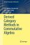
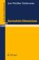

Publications
Preprints
-
Lars Winther Christensen, Luigi
Ferraro, and Henrik
Holm, Amplitude inequalities for local (co)homology.
[ Preprint (2026), 21 pp. ]
-
Lars Winther
Christensen, Antonia
Kekkou,
Justin
Lyle, Zachary
Nason, and
Andrew
J. Soto Levins,
G-levels of perfect complexes and a Bass formula for levels.[ Preprint (2026), 13 pp. ]
Journal Articles
-
Lars Winther Christensen, Sergio
Estrada, and Peder
Thompson, Acyclic complexes and regular rings,
Mediterr. J. Math. 23 (2026), article number 57, 14 pp., [ Preprint MR 5026329 Zbl 08194485 ] -
Lars Winther Christensen, Orin Gotchey,
and Alexis
Hardesty,
Sampling algebra structures on minimal free resolutions of length 3,
Exp. Math. 34 (2025), 754–771. [ Preprint MR 4905032 Zbl 08128769 ] -
Lars Winther Christensen
and Luigi
Ferraro, The Improved New
Intersection Theorem revisited,
Michigan Math. J. 75 (2025), 267–274. [ Preprint MR 4905032 Zbl 1567.13016 ] -
Lars Winther Christensen, Sergio
Estrada, Li
Liang, Peder
Thompson, and Junpeng Wang,
One-sided Gorenstein rings, Forum Math. 36 (2024), 1411–1433.
[ Preprint MR 4790806 Zbl 1564.16005 ] -
Lars Winther Christensen,
Luigi
Ferraro,
and Peder
Thompson,
Rigidity of Ext and Tor via flat–cotorsion theory, Proc. Edinb. Math. Soc. 66 (2023), 1142–1153.
[ Preprint MR 4679218 Zbl 1532.13018 ] -
Lars Winther Christensen
and Oana
Veliche,
Generic local rings on a spectrum between Golod and Gorenstein,
Adv. Appl. Math. 151 (2023), paper no. 102580, 55 pp. [ Preprint MR 4616997 Zbl 1540.13019 ] -
Lars Winther
Christensen, Nanqing
Ding, Sergio
Estrada, Jiangsheng
Hu, Huanhuan
Li,
and Peder
Thompson,
The singularity category of an exact category applied to characterize Gorenstein schemes,
Quart. J. Math. 74 (2023), 1–27. [ Preprint MR 4571621 Zbl 1515.14029 ] -
Lars Winther
Christensen, Sergio
Estrada,
and Peder
Thompson,
Gorenstein weak global dimension is symmetric,
Math. Nachr. 294 (2021), 2121–2128. [ Preprint MR 4371287 Zbl 1537.16008 ] -
Lars Winther
Christensen, Sergio
Estrada,
and Peder
Thompson,
The stable category of Gorenstein flat sheaves on a noetherian scheme,
Proc. Amer. Math. Soc 149 (2021), 525–538. [ Preprint MR 4198062 Zbl 1457.14036 ] -
Lars Winther Christensen,
Sergio
Estrada, Li
Liang, Peder
Thompson, Dejun
Wu,
and Yang
Gang,
A refinement of Gorenstein flat dimension the via the flat–cotorsion theory,
J. Algebra 567 (2021), 346–370. [ Preprint MR 4159258 Zbl 1478.16004 ] -
Lars Winther Christensen,
Oana
Veliche,
and Jerzy
Weyman,
Minors of a skew symmetric matrix: a combinatorial approach,
Electron. J. Linear Algebra 36 (2020), 658–663. [ Preprint MR 4165809 Zbl 1452.15002 ] -
Lars Winther Christensen,
Oana
Veliche,
and Jerzy
Weyman, Linkage classes of grade
3 perfect
ideals,
J. Pure Appl. Algebra 224 (2020), paper no. 106185, 29 pp. [ Preprint MR 4048506 Zbl 1440.13056 ] -
Lars Winther
Christensen, Oana
Veliche, and
Jerzy
Weyman, Trimming a Gorenstein
ideal,
J. Commut. Algebra 11 (2019), 325–339. [ Preprint MR 4038053 Zbl 1441.13059 ] -
Lars Winther Christensen and
Peder
Thompson, Pure-minimal chain
complexes,
Rend. Semin. Mat. Univ. Padova 142 (2019), 41–67. [ Preprint MR 4032803 Zbl 1454.16001 ] -
Lars Winther Christensen,
Oana
Veliche,
and Jerzy
Weyman,
Free resolutions of Dynkin format and the licci property of grade 3 perfect ideals,
Math. Scand. 125 (2019), 163–178. [ Preprint MR 4031044 Zbl 1451.13044 ] -
Lars Winther Christensen
and Dejun
Wu,
A Bass equality for Gorenstein injective dimension of modules finite over homomorphisms,
Arch. Math. (Basel) 113 (2019), 459–467. [ Preprint MR 4016630 Zbl 1430.13019 ] -
Lars Winther
Christensen,
Srikanth B. Iyengar,
and Thomas
Marley,
Rigidity of Ext and Tor with coefficients in residue fields of a commutative noetherian ring,
Proc. Edinb. Math. Soc. 62 (2019), 305–321. [ Preprint MR 3935802 Zbl 1412.13020 ] -
Lars Winther Christensen
and Oana
Veliche,
The Golod property of powers of the maximal ideal of a local ring,
Arch. Math. (Basel) 110 (2018), 549–562. [ Preprint MR 3803744 Zbl 1393.13043 ] -
Lars Winther Christensen and Kiriko
Kato, Totally acyclic complexes and
locally Gorenstein rings,
J. Algebra Appl. 17 (2018), paper no. 1850039, 6 pp. [ Preprint MR 3760008 Zbl 1390.13042 ] -
Olgur
Celikbas, Lars Winther
Christensen, Li
Liang, and Greg
Piepmeyer,
Complete homology over associative rings, Israel J. Math. 221 (2017), 1–24.
[ Preprint MR 3705846 Zbl 1428.16007 ] -
Olgur
Celikbas, Lars Winther
Christensen, Li
Liang, and Greg
Piepmeyer,
Stable homology over associative rings, Trans. Amer. Math. Soc. 369 (2017), 8061–8086.
[ Preprint MR 3695854 Zbl 1397.16007 ] - Lars Winther Christensen and Srikanth B. Iyengar, Tests for injectivity of modules over commutative rings, Collect. Math. 68 (2017), 243–250. [ Preprint MR 3633060 Zbl 1372.13007 ]
-
Lars Winther Christensen, Sergio Estrada, and
Alina
Iacob,
A Zariski-local notion of F-total acyclicity for complexes of sheaves,
Quaest. Math. 40 (2017), 197–214. [ Preprint MR 3630500 Zbl 1423.18047 ] -
Lars Winther Christensen,
Fatih
Köksal,
and Li
Liang, Gorenstein dimensions of
unbounded complexes
and change of base (With an appendix by Driss Bennis), Sci. China Math. 60 (2017), 401–420.
[ Preprint MR 3600932 Zbl 1381.13006 ] -
Lars Winther Christensen
and Fatih
Köksal, Injective modules
under faithfully flat ring extensions,
Proc. Amer. Math. Soc. 144 (2016), 1015–1020. [ Preprint MR 3447655 Zbl 1361.13006 ] -
Jesse
Burke, Lars Winther Christensen,
and
Ryo Takahashi, Building modules
from the singular locus,
Math. Scand. 116 (2015), 23–33. [ Preprint MR 32322605 Zbl 1310.13019 ] -
Lars Winther Christensen and
David
A. Jorgensen,
Vanishing of Tate homology and depth formulas over local rings,
J. Pure Appl. Algebra 219 (2015), 464–481. [ Preprint MR 3279366 Zbl 1311.13016 ] -
Lars Winther Christensen
and Henrik
Holm, The direct limit closure
of perfect
complexes,
J. Pure Appl. Algebra 219 (2015), 449–463. [ Preprint MR 3279365 Zbl 1357.16015 ] -
Lars Winther Christensen and
Oana
Veliche, Local rings of
embedding codepth 3:
A classification algorithm, J. Softw. Algebra Geom. 6 (2014), 1–8. [ Preprint MR 3338667 Zbl 1401.13081 ][ Accompanying Macaulay2 package CodepthThree ]
-
Lars Winther Christensen and
Oana
Veliche, Local rings of
embedding codepth 3. Examples,
Algebr. Represent. Theory 17 (2014), 121–135. [ Preprint MR 3160716 Zbl 1295.13019 ] -
Lars Winther Christensen and
David
A. Jorgensen, Tate (co)homology
via pinched complexes,
Trans. Amer. Math. Soc. 366 (2014), 667–689. [ Preprint MR 3130313 Zbl 1326.18008 ] -
Lars Winther Christensen
and
Henrik Holm, Vanishing of
cohomology over Cohen–Macaulay rings,
Manuscripta Math. 139 (2012), 535–544. [ Preprint MR 2974289 Zbl 1255.13009 ] -
Lars Winther Christensen,
David
A. Jorgensen, Hamidreza
Rahmati,
Janet Striuli,
and
Roger
Wiegand,
Brauer–Thrall for totally reflexive modules, J. Algebra 350 (2012), 340–373.
[ Preprint MR 2859892 Zbl 1274.13026 ] -
Lars Winther Christensen and Henrik Holm,
Algebras that satisfy Auslander's condition on vanishing of cohomology,
Math. Z. 265 (2010), 21–40. [ Preprint Erratum MR 2606948 Zbl 1252.16008 ] -
Lars Winther Christensen
and
Sean Sather-Wagstaff,
Transfer of Gorenstein dimensions along ring homomorphisms,
J. Pure Appl. Algebra 214 (2010), 982–989. [ Preprint MR 2580673 Zbl 1186.13010 ] -
Lars Winther
Christensen,
Janet Striuli,
and
Oana Veliche,
Growth in the minimal injective resolution of a local ring,
J. Lond. Math. Soc. 81 (2010), 24–44. [ Preprint MR 2580452 Zbl 1190.13018 ] -
Lars Winther Christensen and Sean
Sather-Wagstaff, Descent
via Koszul extensions,
J. Algebra 322 (2009), 3026–3046. [ Preprint MR 2567408 Zbl 1186.13024 ] -
Lars Winther Christensen and Henrik Holm,
Ascent properties of Auslander
categories,
Canad. J. Math. 61 (2009), 76–108. [ Preprint MR 2488450 Zbl 1173.13016 ] -
Lars Winther Christensen and Sean
Sather-Wagstaff,
A Cohen–Macaulay algebra has only finitely many semidualizing modules,
Math. Proc. Cambridge Philos. Soc. 145 (2008), 601–603. [ Preprint MR 2464778 Zbl 1153.13020 ] -
Lars Winther Christensen,
Greg
Piepmeyer,
Janet Striuli,
and
Ryo Takahashi,
Finite Gorenstein representation type implies simple singularity,
Adv. Math. 218 (2008), 1012–1026. [ Preprint MR 2419377 Zbl 1148.14004 ] -
Lars Winther Christensen
and
Oana Veliche, A test complex for
Gorensteinness,
Proc. Amer. Math. Soc. 136 (2008), 479–487. [ Preprint MR 2358487 Zbl 1131.13021 ] -
Lars Winther Christensen and Oana
Veliche, Acyclicity over local
rings with radical cube zero,
Illinois J. Math. 54 (2007), 1439–1454. [ Preprint MR 2417436 Zbl 1148.13004 ] -
Lars Winther Christensen
and
Srikanth Iyengar, Gorenstein
dimension of modules over
homomorphisms,
J. Pure Appl. Algebra 208 (2007), 177–188. [ Preprint MR 2269838 Zbl 1105.13014 ] -
Lars Winther Christensen, Anders
Frankild, and Henrik
Holm,
On Gorenstein projective, injective and flat dimensions—A functorial description with applications,
J. Algebra 302 (2006), 231–279. [ Preprint MR 2236602 Zbl 1104.13008 ] -
Lars Winther Christensen, Sequences
for complexes
II,
Math. Scand. 91 (2002), 161–174. [ Preprint MR 1931568 Zbl 1021.13015 ] -
Lars Winther Christensen, Hans-Bjørn Foxby, and Anders
Frankild,
Restricted homological dimensions and Cohen–Macaulayness,
J. Algebra 251 (2002), 479–502. [ Preprint MR 1900297 Zbl 1073.13501 ] -
Lars Winther Christensen, Sequences
for complexes,
Math. Scand. 89 (2001), 161–180. [ Preprint MR 1868172 Zbl 1021.13014 ] -
Lars Winther Christensen,
Semi-dualizing complexes and their Auslander
categories,
Trans. Amer. Math. Soc. 353 (2001), 1839–1883. [ Preprint MR 1813596 Zbl 0969.13006 ]
Book Chapters
{kind=link}
{kind=link}
{kind=link}
{kind=link}
{kind=link}
{kind=link}
Books
|
 |
Lars Winther Christensen, Hans-Bjørn Foxby,
and Henrik
Holm, Derived Category Methods in Commutative Algebra, Springer Monographs in Mathematics. Springer, Cham, 2024, xxiii + 1119 pp. [ Errata MR 4890472 Zbl 1559.13001 ] |
|
 |
Lars Winther
Christensen, Gorenstein
Dimensions,
Lecture Notes in Math. vol. 1747. Springer-Verlag, Berlin, 2000, xiii + 204 pp. [ Errata MR 1799866 Zbl 0965.13010 ] |
{kind=link}
{kind=link}
Software
-
Lars Winther
Christensen, Luigi
Ferraro, Francesca
Gandini, Frank
Moore,
and Oana
Veliche,
ResLengthThree, Macaulay2 package (2020), current version: 1.0. - Lars Winther Christensen and Oana Veliche, TorAlgebra, Macaulay2 package (2014), current version 2.1 (2020). (Version 1.0 documented in [20].)
Varia
-
Noam Horwitz, Irena Peeva, Lars Winther Christensen,
Sean
Sather-Wagstaff,
and Janet
Striuli,
Selected Proceedings from two Special Sessions on Commutative Algebra sponsored by AMS,
J. Commut. Algebra 1, 339–341. (Introduction to this special issue) -
Lars Winther
Christensen, Functorial
Dimensions, (Ph.D. thesis)
Department of Mathematical Sciences, University of Copenhagen, 1999. [ Text Cover ] -
Lars Winther Christensen, Side 9
sætningen: Ultra (in
Danish),
FAMØS — Fagblad for Aktuar, Matematik, Økonomi og Statistik, 10. /aring;rgang, nr. 4, maj 1997.
Teaching
Publications
Curriculum Vitæ